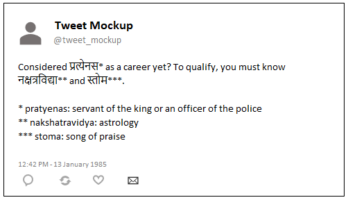

Examples
What can you do with these APIs
Here's the code for a career advice app made with these APIs. And here's a sample app for a fictional take on the life of a child in vedic times.
Read on for more use cases.
Infographics
Make infographics that answer specific questions, like these images.
Click the images to enlarge them.
Who all did Vishwamitra sing to?

Who all are the composers of the Rig Veda verses?


Twitter bots
Make a bot that tweets a word a day

API to use: vs
Example code:
...
for k,v in (api_data[random_word]).items():
if k == 'nagari':
hindi = str(v)
if k == 'description':
meaning = str(v)
...
tweet_text = 'TEST' + '\nRandom vedic word of the day: ' + hindi + ' (' + translit + ')' '\nMeaning: ' + meaning + '\nDictionary lookup: ' + apte_url
Make an insult-spewing Twitter bot

API to use: vs
Algorithm:
...
May your {'nagari' where 'category'='family'} be blighted with {'nagari', where 'category'='disease'}
\n
* 'word' ('description')
\n
** 'word' ('description')
...
Become a vedic career consultant
API to use: vs
Algorithm:
Considered nagari from category=occupation as a career yet? To qualify, you must know nagari of one random item from category=subject and category=literature.
List of word and description for the three nagari words
Link up with other resources to tweet a vedic hymn a day
API to use: rv
- Pick the
mandalandsukta. - Append this number to the base URL of the external resource that contains the hymn. For example, if the base URL is
https://en.wikisource.org/wiki/The_Rig_Veda/, createhttps://en.wikisource.org/wiki/The_Rig_Veda/Mandala_1/Hymn_2. - If you want the sanskrit text as well, do these two additional things:
- Translate the numbers into the nagari script. For example, if
mandalis 1 andsuktais 2, create१.२. - Append this number to the base URL of the wikisource pages that contains the Rig Veda Samhita texts. For example, if the base URL is
https://sa.wikisource.org/wiki/ऋग्वेदः_सूक्तं_, createhttps://sa.wikisource.org/wiki/ऋग्वेदः_सूक्तं_१.२
- Translate the numbers into the nagari script. For example, if
- Tweet the details as a Vedic Hymn Of The Day.

Teaching aids
Use the data to weave stories like these (click the tweets to read the entire story):
Remember those history lessons in school? Where the usual suspects would be sections like 'Position of women in society', 'Contribution of king <name> to <whatever>', 'Art and architecture of <dynasty>, and such? üìö
— Anindita Basu (@anindita_basu) October 23, 2018
This thread's a bit on women poets in the Rig Veda.
This tweet-thread used the rv API to pick only those verses that were written by female poets: ['sungbycategory'] == 'human female'
Let's do one of those "Non-verbal Reasoning" questions: Spot the odd one out in this picture: pic.twitter.com/Ms6OuO15Ay
— Anindita Basu (@anindita_basu) October 26, 2018
This tweet-thread used the rv API to pick only those verses where ['sungby'] == ['sungfor']. It also used the rv API to aggregate the number of sukta in each mandal, grouped by ['sungfor'], and draw the piecharts.
Some more story ideas:
- Talk about the rivers, mountains, and places mentioned in the book. Use the
vsAPI, where the resource iscategory, and the values of the category aremountain,place, andriver. - Talk about the occupations that people were invested in. Use the
vsAPI, where the resource iscategoryand the value isoccupation. - ...Your story idea here...